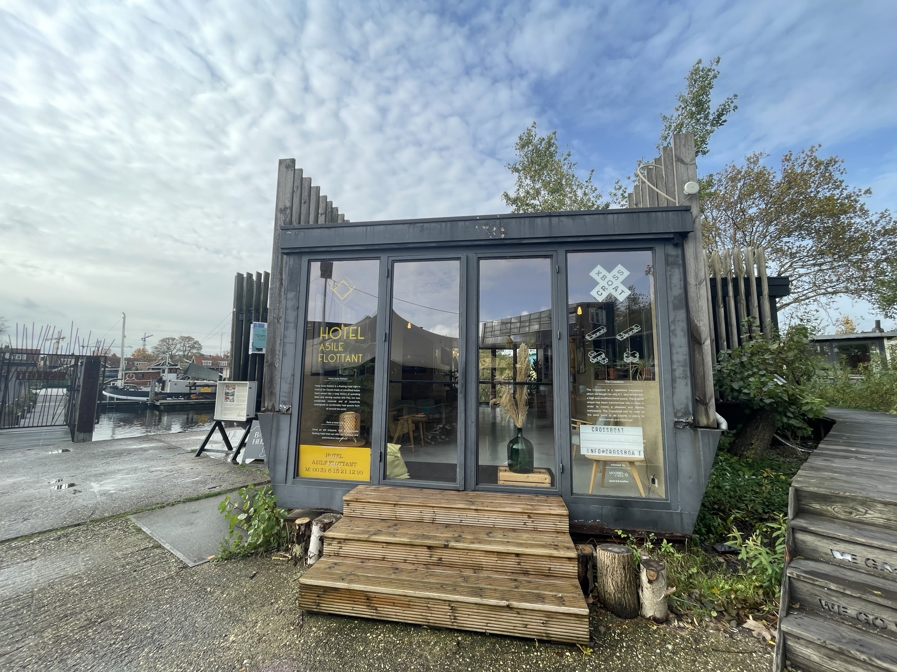

Hier zie je een plaatje van de ingang van de Ceuvel. Het staat allemaal op vervuild grond, maar door de verschillende duurzame dingen op het terrein laten ze de grond straks schoner achter.
Dit is het Metaboliclab van de Ceuvel, Dit is een evenementenruimte. Je kan het boeken voor onder andere vergadering en/of voor het geven van
workshops, maar dat is niet het enige handige aan dit lab op het dak van dit lab hebben ze namelijk een kas gemaakt waar eigen kruidens worden gekweekt. Deze kruidens worden dan weer gebruikt
in de keuken van het café op het terrein, namelijk Café de Ceuvel.
Dit is het restaurant op het terrein: Café de Ceuvel. Ook hier zorgen ze ervoor dat alles duurzaam gebeurd, ze koken namelijk 100% vegan en maken zelf hun eigen frisdrank.
Ook is er in het restaurant gebruik gemaakt van Upcycling, waar ze van herbruikte materialen weer meubels van hebben gemaakt.
Hier zie je de Crossboat, dit is een woonboot die ze voor 1 euro hebben gekocht en hebben omgebouwd in de vorm van een kruis. Deze plek
kan gebruikt worden voor veel verschillende dingen zoals presentaties, meetings, cursussen en zelfs als bioscoop.
Dit zijn de drijvende tuinen, waar soms ook evenementen op worden georgansiseerd.
Dit is de podcast caravan, waar je knus in alle rust je eigen podcast kan opnemen
Hier zie je verschillende boten liggen, dit zijn hotelboten. Je kan hier dus overnachten op een unieke plek, lekker rustig op het water.